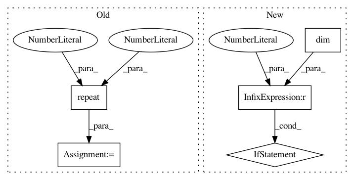

3382a5de41ec450eb8e5adbd57fc4b80633befe5,torchsample/utils.py,,th_bilinear_interp_2d,#Any#Any#,161
Before Change
for i in range(input.size(0))],0)
c_u = coords.unsqueeze(0).repeat(input.size(0),1,1)
clt_u = coords_lt.unsqueeze(0).repeat(input.size(0),1,1).type(coords.type())
coords_offset_lt = c_u - clt_u
vals_t = vals_lt + (vals_rt - vals_lt) * coords_offset_lt[:,:,0]
vals_b = vals_lb + (vals_rb - vals_lb) * coords_offset_lt[:,:,0]
mapped_vals = vals_t + (vals_b - vals_t) * coords_offset_lt[:,:,1]
After Change
coordinates to index the input on
// repeat coords along channel dim if not given that way
if coords.dim() == 2:
coords = coords.unsqueeze(0).repeat(input.size(0),1,1)
xc = torch.clamp(coords[:,:,0], 0, input.size(1)-1)
yc = torch.clamp(coords[:,:,1], 0, input.size(2)-1)
coords = torch.stack([xc, yc],2)
In pattern: SUPERPATTERN
Frequency: 3
Non-data size: 5
Instances
Project Name: ncullen93/torchsample
Commit Name: 3382a5de41ec450eb8e5adbd57fc4b80633befe5
Time: 2017-04-24
Author: ncullen@modv-vlan533.0658.apn.wlan.wireless-pennnet.upenn.edu
File Name: torchsample/utils.py
Class Name:
Method Name: th_bilinear_interp_2d
Project Name: cornellius-gp/gpytorch
Commit Name: 91b0d220c8e816766fd4565e1d2f5115d3afbefe
Time: 2018-10-12
Author: gpleiss@gmail.com
File Name: gpytorch/lazy/lazy_tensor.py
Class Name: LazyTensor
Method Name: matmul
Project Name: OpenNMT/OpenNMT-py
Commit Name: bc0ac45c0bf4f66d56df6c54f5230c6c4281daf1
Time: 2017-05-31
Author: srush@sum1gpu02.rc.fas.harvard.edu
File Name: onmt/Translator.py
Class Name: Translator
Method Name: translateBatch